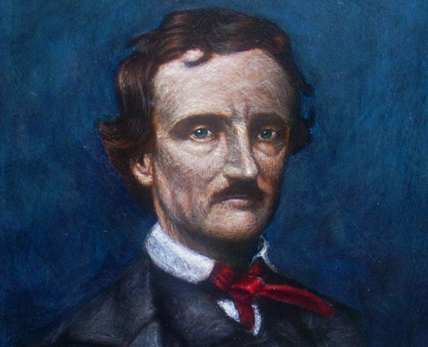

Nacido en Boston, Estados Unidos el día 7 de Octubre de 1849, fue un escritor, poerta,crítico y periodista.
Es recordado especialmente por sus cuentos de terror, aunque también por sus relatos cortos y las novelas góticas.
Su carrela inició en 1827 con un libro de poemas llamado Tamerlane and Other oems, las circunstacias hicieron que se dedicara a la critica literaria,
lo cual hizo que se hiciera nota por su estilo. Debido a su trabajo vivio en varias ciudades de su país,
y para enero de 1845, tras la muerte de su esposa, publicó su poema El cuervo el cual lo hizo celebre.
Edgar Allan Poe Ejerció una gran influencia en la lteratura simbolista francesa y el surrealismo; pero no solo incursiono en la literatura
sino también el la cosmología, criptografía y mesmerismo.
Su trabajo ha sido tan bien recibido tanto en la literatura como en la música, el cine, la pintura y la televisión.
Practicó diversos generos a lo largo de su carrera, pero se enfoco más hacia la muerte, el entierro en vida o el duelo.
Debido a su oboseción con estos temas son muy reconocidos sus relatos: